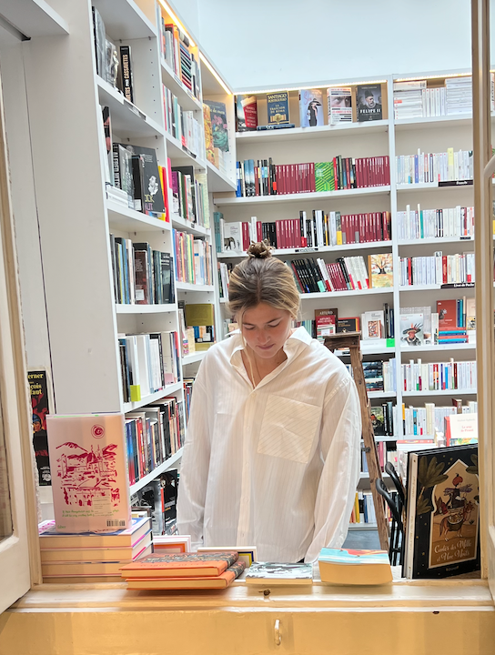

Lucy Siegel is a writer living in Brooklyn. In her poetry and prose she explores themes of personal transformation and the complexity of the human experience. She leans on rupture and refusal of tidy conclusions in favor of honesty and curiosity over certainty. She is currently working on her debut novel and poetry manuscript.
I cannot make you understand. I cannot make anyone understand what is happening inside me. I cannot even explain it to myself. Franz Kafka